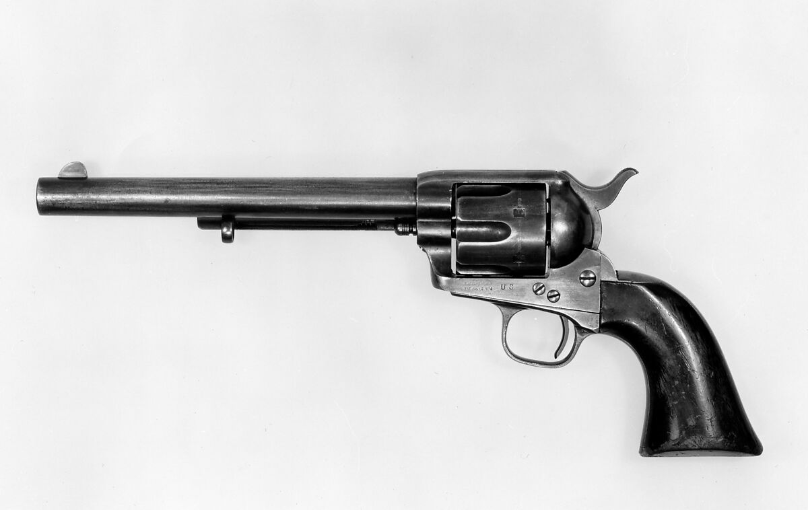
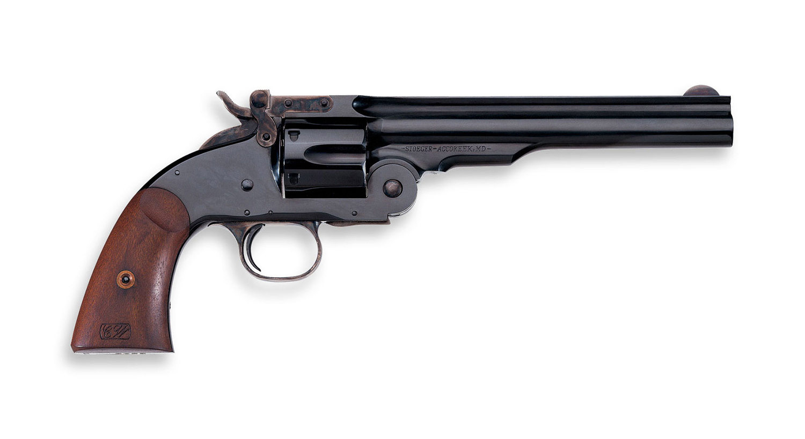
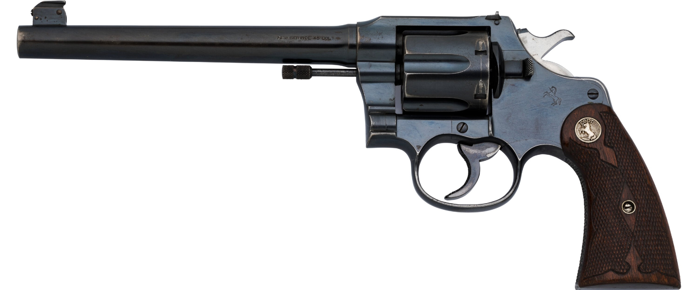

In 1873 Samuel Colt invented the Colt Single Action Army, "Peacemaker" or "Cattleman's Gun", which became the symbol of the Wild West and started being used not only in the USA, but as far away as Indonesia in the 20th century, even after double action firearms where invented. That was because of its lightness, accuracy, its decent caliber of 11.43x23mm, its mass production and popularity, and most importantly, the new mechanism where you just put a round in each hole. It can now fire six shots.

As the 20th century dawned, revolvers continued to undergo innovations, including the introduction of automatic reloading mechanisms and more powerful calibers. Military conflicts such as the First and Second World Wars made them an indispensable part of military strategy.
Today, revolvers are valued by collectors and shooting enthusiasts, but they also remain real weapons for self-defense and law enforcement. Whether viewed as a symbol of personal freedom or as an engineering marvel, revolvers carry with them the history of human innovation and the pursuit of better weaponry.
Benefits of Owning a Firearm
You can defend yourself
You can defend your country
You can defend your property
You can defend your neighbors
It's badass
Schofield Revolver
The Schofield is a historic revolver popular during the American West in the 19th century. It is known for its distinctive design that includes a hole in the top of the cylinder for loading and exceptional durability. Schofield revolvers were used by the United States Army and other military forces during this period. Although it wasn't that popular and common, it is very accurate and easy to handle, and very expensive.

Double-Action Revolver
This type of revolver can be double-action, meaning that the bolt can be pressed to fire while pre-cocking the trigger spring, rather single-action, where the trigger spring cocked manually before each shot. This design provides greater flexibility and convenience when using the revolver.

Single-Action Revolver
This type of revolver requires the trigger spring to be tensioned manually before each shot, with the bullet only being lowered afterwards. This design is more difficult to use than double-action revolvers, but some shooters prefer its simplicity and control. It's also much more reliable and accurate.